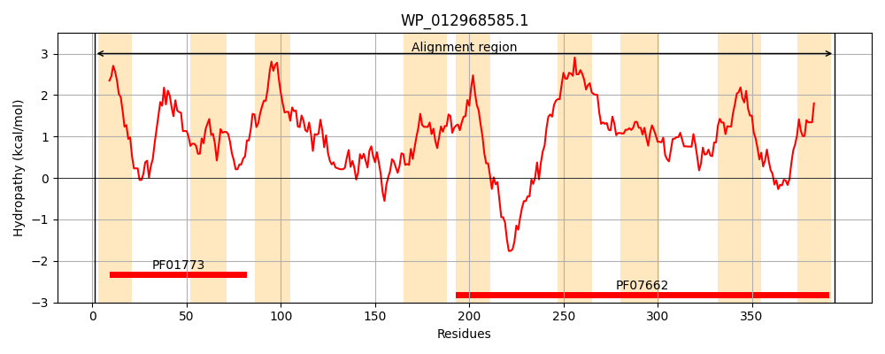
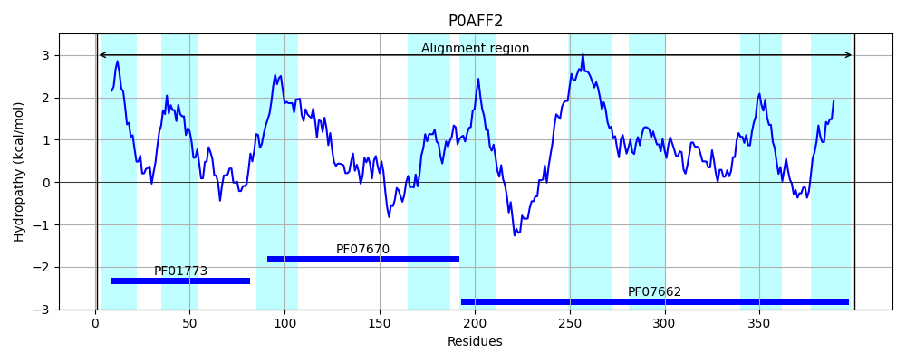
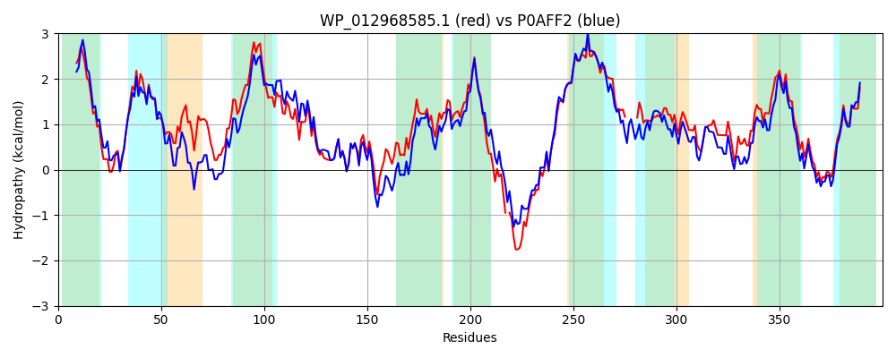

Hit Accession: P0AFF2
Hit TCID: 2.A.41.1.1
Hit Description: gnl|BL_ORD_ID|8821 gnl|TC-DB|P0AFF2|2.A.41.1.1 Nucleoside permease nupC - Escherichia coli.
Mach Len: 400
e:0.000000
Query TMS Count : 9
Hit TMS Count: 9
TMS-Overlap Score: 7.650000
Predicted Substrates:CHEBI:5584;hydron, CHEBI:7647;nucleoside
BLAST Alignment:
Score: 1433 , Bit scores: 556 bits, E-value: 0.0e+00, Alignment length: 400, Percentage identity: 72
Query: 1 MTAFFHFLLALVVILALAWLVSYDRQNIRIRYILQLIIIEIALAFFFLHAESGLWLVKNISGFFASLLGFAAEGTNFVFGGMSEKGLAFIFLGVLCPIVFISALIGILQHWRILPIFIRVIGTLLSKVNGMGKLESFNAVSSLILGQSENFIAYKGVLGDLSSRRLFTMAATAMSTVSLSIVGAYMTMLDAKYVVAALILNMFSTFIVLSVINPTRPD-SEQEIKLEKLHESQSFFEMLGEYILAGFKVAMIILAMLIGFIALISAINALFATLFG-----LSFQQILGYVFYPLAWLIGIPLSDALNAGSIMATKLVANEFVAMIELQKIAASMTPRGLGILSVFLVSFANFASIGIIAGAIKGLNEPQGNIVSRFGLRLVYSATLVSLLSASFAGLVL 394
M HF+LAL V+ LA LVS DR+ IRIRY++QL++IE+ LA+FFL+++ GL VK S F LLGFA EGTNFVFG M+++GLAF FL VLCPIVFISALIGILQH R+LP+ IR IG LLSKVNGMGKLESFNAVSSLILGQSENFIAYK +LG +S R++TMAATAMSTVS+SIVGAYMTML+ KYVVAAL+LNMFSTFIVLS+INP R D SE+ I++ LHE QSFFEMLGEYILAGFKVA+I+ AMLIGFIALI+A+NALFAT+ G +SFQ ILGY+FYP+AW++G+P S+AL GSIMATKLV+NEFVAM++LQKIA++++PR GI+SVFLVSFANF+SIGIIAGA+KGLNE QGN+VSRFGL+LVY +TLVS+LSAS A LVL
Sbjct: 1 MDRVLHFVLALAVVAILALLVSSDRKKIRIRYVIQLLVIEVLLAWFFLNSDVGLGFVKGFSEMFEKLLGFANEGTNFVFGSMNDQGLAFFFLKVLCPIVFISALIGILQHIRVLPVIIRAIGFLLSKVNGMGKLESFNAVSSLILGQSENFIAYKDILGKISRNRMYTMAATAMSTVSMSIVGAYMTMLEPKYVVAALVLNMFSTFIVLSLINPYRVDASEENIQMSNLHEGQSFFEMLGEYILAGFKVAIIVAAMLIGFIALIAALNALFATVTGWFGYSISFQGILGYIFYPIAWVMGVPSSEALQVGSIMATKLVSNEFVAMMDLQKIASTLSPRAEGIISVFLVSFANFSSIGIIAGAVKGLNEEQGNVVSRFGLKLVYGSTLVSVLSASIAALVL 400 | Protein Hydropathy Plots: |
|---|
|  |  |
Pairwise Alignment-Hydropathy Plot:
|
|---|
|  |